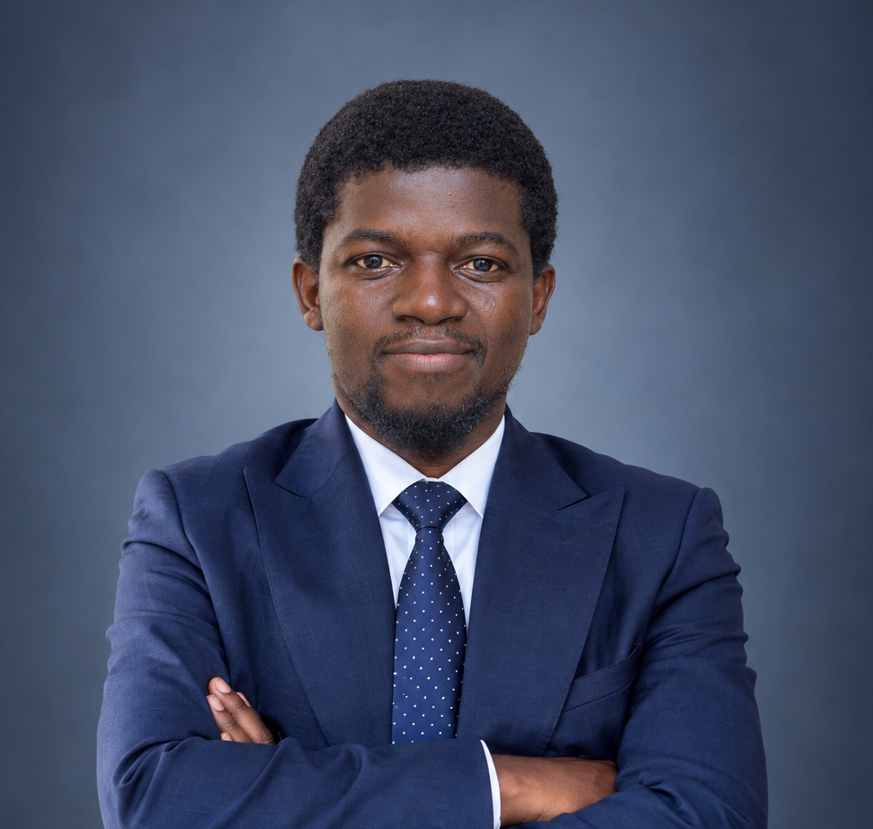

ERP Naticlass — Gestion Scolaire SaaS
Solution multi-établissements complète (Finance, Paie, Scolarité, Discipline). Traitement de données volumineuses, sécurité RBAC, CI/CD et déploiement continu.

Développeur Full Stack / Référent Technique
Développeur Full Stack avec plusieurs années d'expérience dans la conception, le déploiement et la maintenance d'applications métiers (Laravel, React, Docker, CI/CD). Concepteur d'un ERP de gestion scolaire déployé dans plus de 15 établissements et de systèmes d'archivage numérique universitaires.
Développeur full stack expérimenté dans la conception, le déploiement et la maintenance d'applications métiers (Laravel, React, Docker, CI/CD). Concepteur d'un ERP de gestion scolaire complet (scolarité, finance, paie, discipline) déployé dans plus de 15 établissements, et d'applications de suivi-évaluation et d'archivage numérique pour des organisations internationales et universitaires.
Habitué à travailler avec des équipes métiers, à analyser des données, à documenter et à accompagner des utilisateurs et des développeurs. Rigoureux, autonome et force de proposition, je cherche à mettre mon expérience au service de la modernisation et de l'intégration de systèmes d'information.
Français : Professionnel (Écrit & Oral) | Anglais : Langue de travail | Swahili : Professionnel | Lingala : Langue de travail
Scout — Chef de groupe (2021 – 2024) : Encadrement bénévole de plus de 800 jeunes, animation d'équipes et gestion de groupe.
Solution multi-établissements complète (Finance, Paie, Scolarité, Discipline). Traitement de données volumineuses, sécurité RBAC, CI/CD et déploiement continu.
Numérisation et moteur de recherche pour les relevés, diplômes et dossiers étudiants remontant à 1989.
Suivi des bénéficiaires, des activités et gestion budgétaire en temps réel avec tableaux de bord KPI.
Personnes-ressources pouvant attester de mon parcours professionnel :
Je suis joignable rapidement par email ou téléphone.